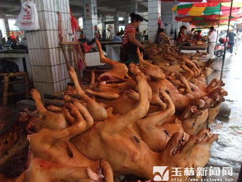
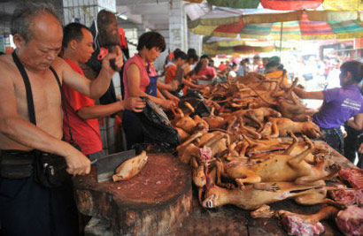
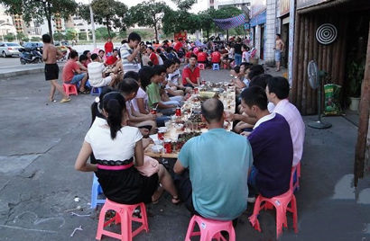

屠杀之城丑出一身冷汗

一座嗜血无情的城市

玉林人当街吞啖狗肉，庆祝所谓的“狗肉节”
2014年6月6日，我与几个学生一起自驾车从岭南樟木头出发到西部甘南采风，沿途对各地的重要人文景观进行采访、考察和挖掘，留下一些很快就会消失的东西。期间，我们到达的第一站就是广西的玉林，这个因为目前沸沸扬扬的“
玉林原名郁林，是国家森林城市，也是广西的第四大城市，桂东南的经济、政治、文化、交通中心，还是两广最重要的交通要道，西接广西壮族自治区钦州市，南邻广西壮族自治区北海市，北毗广西壮族自治区贵港市，东北与广西壮族自治区梧州市接壤。
玉林的出名之处，在于它有大量的风景名胜，拥有“天南杰构”江南四大名楼之一的经略台真武阁，四大名关之一的鬼门关，四大名庄之一的陆川谢鲁山庄，国家AAAA级风景名胜区、中国道教三十六洞天之二十洞天容县都峤山和二十二洞天北流勾漏洞等。
但是，我们这次来玉林不是旅游的，我们只想看看当地的文化，看看这片土地今天是什么样子，因为过不了多久，今天的一切就会过去，成为记忆，当地的文化也会被全球化的浪潮所吞没，再也找不到踪迹。我们就想看一看，今天的它身上，有没有一种独特的东西。
不过，近几年，玉林文化中最著名的，却是引起轩然大波的“荔枝狗肉节”。
据说，在玉林本地，许多食客会在烈日炎炎的夏至，汗流浃背地在家中或大街小巷的狗肉摊上，尝荔枝，喝米酒，吃狗肉火锅。这是玉林民间独有的一种文化现象，传承了很多年。玉林人认为狗肉和荔枝湿热，易上火，夏至又是阳气最盛的一天，吃这两种东西，正好与阳气呼应，能以阳制阳，不会像平常那样热火攻心，也有人说，夏至吃狗肉荔枝，无异于火上浇油，在生意人眼里有“红红火火，旺上加旺”的兆头，有“广西温州”之称的玉林人当然
我却认为，不论这节日如何，一个城市竟然因为一种屠杀的文化而驰名，就是一件可悲的事。你想，人们想起一座城市，记起的不是它的美好，不是它的故事，不是它的贡献，而是一种欲望和屠杀。多么可怕？那座城市的价值，也无疑被降低了。
我一直都反对屠杀，屠杀是人类欲望和自私的产物，是一种我们不能忽视的
我们不应该赞美屠杀，不应该憧憬屠杀，更不应该为屠杀的行为而自豪，我们应该善待一切生命，也包括动物。动物是我们的朋友，其实也是我们自己，我们善待它们的时候，其实就是在善待我们自己。
在
到了玉林后，我发现这是一个很典型的南方小城，没有过多的高楼大厦，街上比较乱，很多地方都可以见到老岭南的那种老砖头，这里的很多老百姓都骑着摩托车，绿灯亮了，密密麻麻的摩托车如同蚂蚁结队一样，从我们身边开过。
虽然这座小城有着自己的朴实——从当地老百姓的穿着上就可看出，但是，在这里，我找到了樟木头的气息，也就是时代变迁的气息。慢慢的，每一个城市都会失去自己的味道，失去自己的气息，被同化了。如果没有文字的记载，随着时光的流逝，这片土地上的老百姓们，怎样度过了他们的一生，在他们的时代，有过什么独有的东西，等等，后人们都将无从得知。你想想看，一代又一代的老百姓，像水滴一样存在过，但又在瞬息间消失于无际，这片土地上曾经有太多的恩怨情仇，有太多的世事变迁，但也消失于无际。有多少个性的男女，有多少个性的群体，有多少个性的文化，最后，全都无一例外地消失于无际。而眼下的一切，也是这样。谁能留住他们一时的存在？谁能让他们的存在有了意义？
这便是我写《大漠祭》、《猎原》、《白虎关》的意义之一。不知道，这片土地上，会不会出现一个我这样的人，也为这片土地写一本书，定格一些定然会过去的东西？或许很难，除非他们中的一些人突然觉醒了，发现了集体无意识的存在，然后有意地、持续地去挣脱那种束缚，挣脱人性中贪嗔痴的魔咒，放大心灵本有的爱和诗意，让僵化的心活过来，感受到生命的大真、大善和大美，感受到自己所肩负的使命和责任。
夜幕降临了，走在热闹的大街上，望着这座小城里川流不息的人群，我的心却静到了极点。眼前这玉林小城的人群，这里的时代变迁，我们留不住；早上出发，晚上抵达，其中的那段时光我们也留不住；梦一般的烟雨蒙蒙，仙境般的水墨云雾，也不过是此次文化之旅的一点记忆，我们同样留不住……一切都在变化着，一切都在飞快地过去，无论怎样的经历，我们都留不住。只是，这途中的一草一木，天空中的一云一雾，触目皆是生机。我时而看看书，时而望望窗外那意境深远的云雾水墨画，眼观那片岭南烟雨蒙蒙的翠绿色，也就显得逍遥
就连这熙熙攘攘的玉林小城，虽然很是热闹拥挤，但因为我总能“静处观物动，闲里看人忙”，它便也成了一道风景。而这小城里突然多出的我，一个站在街头，时而看看这，时而看看那的大胡子，又何尝不是他人眼中的风景呢？
玉林这个地方，有个明显的特点，就是沿途的自然风光都很美，但是人文的东西很弱很不美，经济似乎也不是很发达。但这些都算好的，最明显的毛病，是一种发展的无序性。整个城市很混乱，所有的房子都在无序地发展，都是有一搭没一搭地堆着，没有整体规划。不管是乡村，还是城市，不管是城市居民楼，还是农民的房屋，都没有经过整体的规划，看不出任何秩序。而且，远方的山上还在冒烟，不知道是在烧什么东西。这样的城市布局、乡村布局，完全可以反映出当地人的一种心态，就是无序。
像玉林街头的那些摩托车，数量又多，大街小巷里都是，又横冲直撞。有些摩托车前面坐了个孩子，后面还坐着个女人，已经超重了，但开起来同样非常疯狂。看到那些摩托车的时候，我们就想到了蝗虫，想到了蝗灾的出现。我们不是说摩托车不好，而是说开摩托车应该有序，不应该无序。无序的话，就会非常危险，容易出车祸，对人对己都不好。
当我们说到玉林的无序时，我的学生就谈到了她大学时候的一个玉林同学，她说，那同学就没什么追求，整天浑浑噩噩的，对自己的
哎，就是这片充满了杀戮和混沌的土地，养育出了这样的孩子。她自己这样还不算可怕，但她未来也会有自己的孩子，她会把孩子也培养成这样。这时，我的学生又说，她大学毕业的时候就怀孕了，但是没法生，就堕了胎，但最近又怀孕了……
真实的玉林，跟我的想象不太一样。俗话说，桂林山水甲天下。桂林，玉林仅仅差一个字，而且都在广西。所以我想象中的玉林，应该是风景很秀丽，人文很和谐的。但是，现在的玉林非常像我们今年年初走过的印度，充满了混乱，充满了摩托车，充满了脏乱差。在这样一个城市里，到处是一些像印度那样被改造过的农家车，上面挂满了布条、纤维袋一样的东西。这里的女人也跟印度的女人有点相似，但非常不同的是，印度的女人有
据说过几天就是狗肉节了，街上有专门卖肉狗的，到处都是小肉狗。这些小生命很可爱，但是，它们的眼神中透出了一种让人可怜的东西。它们是为自己不自由的生命而感到悲哀，或许是预感到了自己的悲惨
从一些政府官员居然把杀狗节作为宣传资源，就可以看出这片土地上的官员实在没有水平，连杀狗这样的事情，都可以作为政绩来炫耀，简直是荒谬、无知。所以，昨天陈亦新写了一篇文章，专门对这种文化进行了批判，他批判得有道理。这样一个文明的国家，这样一个文明的时代，居然有这样的政府官员，在倡导着这样的节日，你想想，这是多么的恶心。而且，他们杀的还是人类的好朋友——狗。狗是一种非常忠诚的动物，它们在主人遇到危难的时候，总是会不顾生命危险，挺身而出。有学生告诉我，她朋友家的一只狗，曾经飞身救主，被砍了很深的一刀，甚至见到了骨头，还好抢救及时，才挽回了一条性命。你想，能做到这一点的人有多少？但很多狗都能做到。它们对主人绝对地信任，绝对地忠诚，绝对不会背叛，所以，狗是一种美好的生命。爱好杀狗的人，心里有一种很可怕的东西。当这种东西变成集体无意识，影响了整个社会的时候，人们就会对生命没有任何悲悯，对善良没有任何憧憬，对屠杀没有任何反感，这样的社会，你说有多么可怕？
不过，虽然这个城市杀狗，有杀狗节这样的文化，不能给人任何好感，但它给我留下的印象还是很深，总是让我想到古老落后的印度，想到印度的脏乱差，想到印度的混乱，想到印度街头随处可见的没有被规划修建的房屋，想到那些临时搭建的房子，想到那些乱七八糟地堆成一堆的商品。如果不谈信仰，印度和玉林，其实都是不可爱的城市。
出了城之后，向四处看去，有很多像日本碉楼一样的东西，据说那是农民的房屋。远处可以看到很美的青山绿水，但是这个房屋却没有一点点美感。因为它没有一点点文化的味道，这是让人很遗憾的地方。
途中还可以看到一些破旧房屋，这些房屋没有门窗，挂着一些破旧的纤维袋一样的东西，这一点也跟印度很像，印度也有这种东西。过去，我们认为印度比中国落后很多，据说落后半个多世纪以上，但是在玉林，我们却看到了很多跟印度很相似的景色，包括途中的很多砖房、瓦房。怪的是，这里的房子都没有门窗，到底是为什么，我们也说不清，估计是他们这里的生活习惯或者其他原因吧。
玉林，这城市确实不能给人留下什么很美的印象。虽然这儿的大自然非常美丽，到处都是青山绿水，逃开城市的脏乱差，在这里的大自然里，我们还是可以感觉到和谐的气氛。但是，这个城市的文化中出现了狗肉节，说明当地政府对生命是没有敬畏的，也是没有远见、没有文化的。那么，在这种政府的倡导下，未来，这些青山绿水，这个可爱的大自然，会不会遭到毒手？说不清，实在不好说。不过，可以肯定的是，一个地方的人有什么样的心，就必然会感召一系列相应的环境。
2004年，我到罗马尼亚访问的时候，罗马尼亚的街上到处都是狗，而且长得黑黑胖胖，油光水亮的。当时，我问罗马尼亚的朋友，这么多的狗没有人吃吗？他说有，但是只有两个大使馆的工作人员吃，一是中国大使馆的人，二是朝鲜大使馆的人。当地老百姓在这两个大使馆的垃圾桶里发现了狗骨头之后，还表示了强烈的抗议。所以，在那个地方，是很少有人吃狗的。但是在中国玉林，却是全民吃狗，全民屠狗，还将这种吃狗的习俗作为文化进行弘扬。中国的其他地方，也有人吃狗，有些学生也说，他们朋友家里的猫或狗，如果走出去之后再也没有回来，就有可能是被人抓住吃了。过去，有人还用大货车装满了猫，运到一个地方给人吃。你想想看，这样的文明多么恶心？
了解我的人都知道，每到一个城市，我必去的地方一定是书店。虽然，玉林这个城市不可爱，甚至充满了杀戮，充满了浊气，充满了太多不清凉的东西，但是，我却在这边的书店买到了两本好书。这两本书是之前在网上没有找到的。因为它们的存在，这个城市在我心中的印象便漂亮多了。这说明，一个城市如果有了很好的新华书店，总会给人留下美好的记忆。可是，现在新华书店是越来越少了。不知道在未来的什么时候，我买书的这家新华书店也会消失呢？说不清，这个世界充满了太多的变化和无常。
——2014年6月13日写于香巴文化旅途中